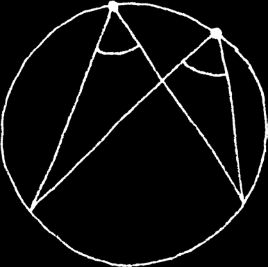
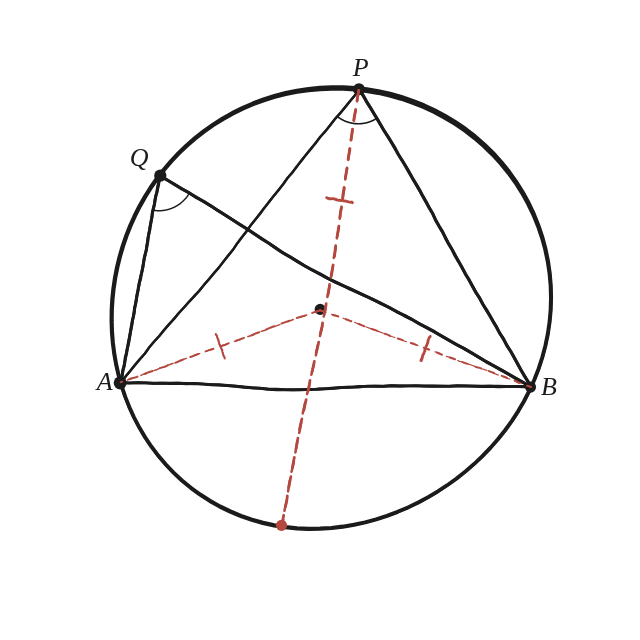

Demostra que, si dos punts es connecten al mateix arc, els angles resultants han de ser iguals.

Ja no hi ha cap diàmetre de partida
A la Qüestió 41 el segment AB ja era un diàmetre, i l'angle sempre sortia 90°. Aquí AB és una corda qualsevol —no passa necessàriament pel centre— i cal demostrar que, mentre el punt es mantingui al mateix arc (la mateixa banda de la corda), l'angle que s'hi veu és sempre el mateix, encara que ja no calgui que sigui recte.
El mateix truc de q41, aplicat a un diàmetre nou
En lloc del diàmetre donat de q41, aquí cal traçar-ne un de nou: el que passa pel centre i pel punt P des d'on es mira. Aquest diàmetre crea dos triangles isòsceles —OPA i OPB—, exactament amb el mateix argument d'abans (OP=OA=OB, tots tres radis).

Dos casos: el diàmetre pot caure dins o fora de l'angle
Anomenant α i β els angles de la base a P en cadascun dels dos triangles isòsceles, l'angle APB que interessa és α+β si el diàmetre auxiliar cau dins de l'angle APB (el separa en dos trossos), però és la diferència dels dos —sempre el gran menys el petit— si el diàmetre cau fora (P és molt a prop d'un dels dos extrems, i el diàmetre queda fora de l'angle format per PA i PB). Amb un cercle de radi 10, centre a l'origen, A a 200° i B a 340°: amb P a 80° (força separat de tots dos extrems), l'angle APB surt 70° i el cas correcte és la suma (α=30°, β=40°, α+β=70°). Amb P a 350° (gairebé enganxat a B), l'angle APB continua sortint 70°, però ara el cas correcte és la resta (α=15°, β=85°, β−α=70°): compte amb l'ordre, que aquí és el gran menys el petit i no a l'inrevés. La suma, en aquest segon cas, donaria 100°, un valor incorrecte.
El mateix per Q, i comparar
Repetint exactament el mateix procediment per al segon punt Q (amb el seu propi diàmetre auxiliar, que pot estar en un cas diferent del de P), s'obté sempre el mateix angle final —70° en aquest exemple, per a qualsevol punt del mateix arc gran. Que el cas (suma o resta) pugui canviar de punt a punt no trenca l'argument: en tots dos casos, aplicant el mateix raonament sobre els dos triangles isòsceles que crea el diàmetre auxiliar corresponent, s'arriba al mateix resultat final.
Tots els angles vistos des del mateix arc són iguals, i valen exactament la meitat de l'angle central que subtendeix la corda. La demostració necessita distingir dos casos —el diàmetre auxiliar pot caure dins o fora de l'angle que es mira, donant suma o resta dels dos angles isòsceles— però arriba al mateix resultat final en tots dos casos, tal com ja havia passat a la Qüestió 15.
Comprovació
Cercle de radi 10, A a 200°, B a 340° (angle central AOB=140°). Amb P a 80°: angle APB=70° (cas suma, 30°+40°). Amb un punt molt a prop de B, a 350°: angle APB=70° igualment (cas resta, 85°−15°). Tots dos coincideixen amb la meitat de l'angle central, 140°/2=70°.